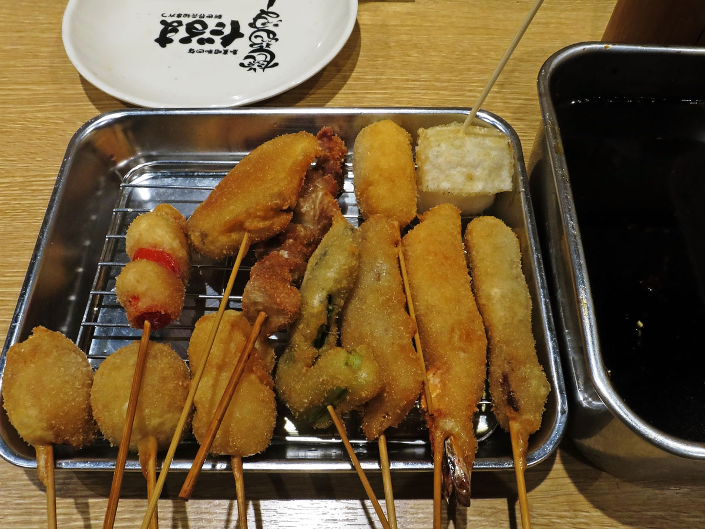

📅 Riepilogo del Viaggio
- Viaggiatori: 2 persone
- Andata: Roma → Tokyo (30 Novembre)
- Ritorno: Osaka → Roma (15 Dicembre)
- Durata in loco: 14 Notti (7 Tokyo, 7 Kyoto)
- Stile: Pop culture, Nerd, Relax, Food.
- Alloggi: Hotel occidentali (No Ryokan).
🏙️ Parte 1: Tokyo (1 - 8 Dicembre)
👆 Clicca sulle schede per scoprire i dettagli e le mappe!
Giorno 1 (1 Dic): Arrivo a Tokyo
- Arrivo, attivazione eSIM, trasferimento in hotel.
- Serata tranquilla a Shinjuku.
Cosa fare:
Sistematevi in Hotel e fate una passeggiata leggera a Kabukicho per vedere la gigantesca testa di Godzilla. Ottimo per assorbire l'atmosfera al neon senza stancarvi troppo.
Cosa mangiare:

Fu-unji (Shinjuku): Famoso per il suo Tsukemen (ramen in cui i noodles vengono intinti a parte in un brodo denso). In alternativa, esplorate Omoide Yokocho per spiedini Yakitori annaffiati da birra ghiacciata.
Giorno 2 (2 Dic): Tradizione e Asakusa
- Mattina: Senso-ji (Asakusa) e Nakamise-dori.
- Pomeriggio: Tokyo Skytree.
Cosa fare:
Entrate dalla Porta del Tuono (Kaminarimon) e pescate il vostro Omikuji (oracolo). Nel pomeriggio andate alla Skytree per i negozi Ghibli e Pokémon, poi salite per il tramonto.
Cosa mangiare:

Asakusa Kagetsudo: Celebre per il suo Jumbo Melon Pan appena sfornato, croccante fuori e soffice dentro. A cena provate Asakusa Imahan, locale storico rinomato per il suo eccellente Sukiyaki (fettine di manzo cotte al tavolo).
Giorno 3 (3 Dic): Il Paradiso Nerd - Akihabara
- Giornata dedicata ad Akihabara.
- Retro-gaming, Action figures, Maid Cafe.
Cosa fare:
Perdetevi nei piani di Radio Kaikan e cercate tesori da Super Potato. Provate i gacha o gli UFO catcher nei centri SEGA/GiGO.
Cosa mangiare:

Go! Go! Curry (Akihabara): Ordinate il famoso Katsu Curry (riso al curry denso con cotoletta). Per un'esperienza a tema, provate l'omelette rice all'@Home Cafe (Maid Cafe) o la morbida cotoletta di manzo da Gyukatsu Motomura.
Giorno 4 (4 Dic): Pop Culture a Shibuya
- Mattina: Santuario Meiji-jingu.
- Pomeriggio: Shibuya (Nintendo Store, Hachiko).
Cosa fare:
Iniziate nel silenzio della foresta del Meiji-jingu. A Shibuya vi aspettano lo Scramble Crossing, la statua di Hachiko e l'enorme Nintendo Store nel centro commerciale Shibuya PARCO.
Cosa mangiare:

Marion Crepes (Harajuku): Tappa obbligata per le iconiche Crêpes giapponesi ripiene. A Shibuya, cenate da Uobei Shibuya Dogenzaka per un Kaiten Sushi dove i piatti arrivano sfrecciando su binari ad alta velocità.
Giorno 5 (5 Dic): Vintage Nerd a Nakano
- Nakano Broadway: Vintage manga e anime.
- Meno caotico di Akihabara, perfetto per collezionisti.
Cosa fare:
A Nakano troverete le cel originali degli anime storici e fumetti introvabili. Mandarake ha decine di negozietti tematici distribuiti su più piani. Un vero paradiso nascosto.
Cosa mangiare:

Chuka Soba Aoba (Nakano): Un'istituzione del quartiere. Il loro piatto forte è il Chuka Soba (Ramen) con un doppio brodo stellare che unisce la ricchezza del maiale e del pollo al sapore delicato di pesce.
Giorno 6 (6 Dic): Ikebukuro (Anime & Manga)
- Ikebukuro: Sunshine City.
- Pokémon Center Mega Tokyo e Animate Store.
Cosa fare:
Passeggiate nell'enorme Animate Flagship Store (il negozio di anime più grande del mondo). Al Sunshine City potrete visitare l'enorme Pokémon Center e la zona dei Gashapon (distributori di capsule).
Cosa mangiare:

Mutekiya (Ikebukuro): Preparatevi alla fila, ma il loro Tonkotsu Ramen (brodo di maiale ricco e saporito) è leggendario. Per un dolce veloce, prendete un Taiyaki ai chioschi intorno a Sunshine City.
Giorno 7 (7 Dic): Odaiba e Gundam
- Odaiba: Isola artificiale sul mare.
- Statua del Gundam Unicorn e Gundam Base.
Cosa fare:
Prendete il treno panoramico Yurikamome senza conducente. Scattate foto pazzesche sotto il Gundam Unicorn a grandezza naturale (che si trasforma ad orari precisi) e visitate le mostre tech.
Cosa mangiare:

Tsukiji Tama Sushi (Odaiba): Situato nel centro commerciale Decks, offre un'ottima formula All-You-Can-Eat Sushi di alta qualità con una vista mozzafiato sul Rainbow Bridge e sulla baia di Tokyo.
🏯 Parte 2: Kyoto & Osaka (8 - 15 Dicembre)
👆 Scopri i percorsi, i templi e i quartieri neon!
Giorno 8 (8 Dic): Arrivo a Kyoto e Gion
- Shinkansen da Tokyo. Check-in a Kyoto.
- Pomeriggio nel quartiere storico di Gion.
Cosa fare:
Dopo le due ore di treno superveloce, posate i bagagli. Il pomeriggio passeggiate tra le basse case di legno di Gion, sperando di scorgere una Geisha, e spingetevi fino al fiume Kamo al tramonto.
Cosa mangiare:

Tsujiri (Gion): Ottimo per una merenda con il loro inimitabile Parfait al Matcha. Per cena, passeggiate a Pontocho e provate Kyoto Gion Mikaku (per la carne Wagyu sulla piastra) o un Izakaya sul fiume per spiedini Yakitori.
Giorno 9 (9 Dic): Il Tempio dell'Acqua
- Kiyomizu-dera (Tempio dell'Acqua): Visita all'alba.
- Strade storiche di Sannenzaka e Ninenzaka.
Cosa fare:
Andateci prestissimo per godervi la magia senza la calca. Sospeso sui pali di legno, offre una vista magica. Al ritorno scendete lungo le stradine acciottolate piene di negozi di artigianato.
Cosa mangiare:

Okutan Kiyomizu: Ristorante centenario circondato da un giardino stupendo. Il piatto forte è lo Yudofu (tofu artigianale in brodo, perfetto per riscaldarsi). Lungo Ninenzaka, c'è uno Starbucks unico, ospitato in una casa tradizionale tatami.
Giorno 10 (10 Dic): Mercato Nishiki e Manga
- Passeggiata al Mercato Nishiki.
- Kyoto International Manga Museum.
Cosa fare:
Iniziate la giornata nella "Cucina di Kyoto", il mercato di Nishiki. Nel pomeriggio sfogliate decine di migliaia di manga storici al museo del fumetto, situato in un'ex scuola elementare.
Cosa mangiare:

Mercato Nishiki: Cercate il chiosco Kari-Kari Hakase per i Takoyaki e Daiyasu per il famoso Tako Tamago. Vicino al museo, provate Gogyo Kyoto per il particolarissimo Ramen al Miso Bruciato (Kogashi Miso).
Giorno 11 (11 Dic): Arashiyama e Kinkaku-ji
- Foresta di Bambù di Arashiyama.
- Il famoso Padiglione d'Oro (Kinkaku-ji).
Cosa fare:
Perdetevi tra gli altissimi e ipnotici fusti verdi di bambù di Arashiyama per foto suggestive. Dopo pranzo spostatevi al Kinkaku-ji (tempio ricoperto d'oro vero), bellissimo al calar del sole.
Cosa mangiare:

Arashiyama Yoshimura: Ristorante con magnifica vista sul fiume Katsura. Il loro piatto principale è la Soba fatta a mano. Per gli amanti del caffè, fate un salto da % Arabica Kyoto Arashiyama.
Giorno 12 (12 Dic): Osaka (Den Den Town & Shinsekai)
- Pendolari da Kyoto a Osaka (30 min di treno).
- Den Den Town e Shinsekai (Quartiere retro).
Cosa fare:
Arrivati a Osaka, spulciate i negozi dell'usato e dell'elettronica a Den Den Town. Poi spostatevi a Shinsekai, passeggiando tra insegne pazze anni '30 e la iconica torre Tsutenkaku.
Cosa mangiare:

Kushikatsu Daruma (Shinsekai): L'inventore del Kushikatsu! Ordinate vassoi di spiedini fritti da intingere (una sola volta!) nella loro salsa segreta. Riconoscerete il locale dall'enorme statua dell'uomo arrabbiato all'ingresso.
Giorno 13 (13 Dic): Osaka (Dotonbori e Namba)
- Secondo giorno da pendolari.
- Il caos illuminato di Dotonbori e Namba.
Cosa fare:
Esplorate l'area dello shopping di Namba e Shinsaibashi. La sera raggiungete Dotonbori, il cuore pulsante dei led di Osaka, per scattare la foto iconica col Glico Man e il granchio gigante meccanico.
Cosa mangiare:

Mizuno (Dotonbori): Un'istituzione per l'Okonomiyaki (premiata Michelin). Per i Takoyaki, mettetevi in fila da Acchichi Honpo (vicino al ponte) per polpette croccanti fuori e morbidissime dentro.
Giorno 14 (14 Dic): Relax a Kyoto
- Giornata totalmente libera a Kyoto.
- Ultimi acquisti, passeggiate e zero levatacce.
Cosa fare:
Godetevi l'ultima giornata con molta calma. La Kyoto Station è un vero capolavoro di architettura e contiene decine di negozi per i regali dell'ultimo minuto e un piccolo Pokémon Center nascosto.
Cosa mangiare:

Katsukura (Kyoto Station): Situato all'11° piano dell'edificio The Cube. Serve uno dei migliori Tonkatsu (cotoletta di maiale impanata) di Kyoto. Potrete macinare voi stessi i semi di sesamo per la salsa di accompagnamento.
Giorno 15 (15 Dic): Partenza da Osaka KIX
- Trasferimento in treno all'aeroporto.
- Volo di rientro in Italia.
Cosa fare:
Prendete il treno rapido Haruka Express dalla stazione di Kyoto che vi porterà diretti all'Aeroporto Internazionale del Kansai in circa 75-80 minuti. Arrivate con buon anticipo!
Cosa mangiare:

551 Horai (Kansai Airport / Kyoto St.): Prima di partire, comprate i loro famosissimi Butaman (soffici panini al vapore ripieni di maiale e cipolla). Sono il comfort food perfetto per l'attesa o il tragitto in treno.
💰 Stima dei Costi (Totale per 2 Persone)
Avendo già l'ICOCA, dovrete solo ricaricarla per i treni locali e la tratta Kyoto-Osaka.
| Voce di spesa | Dettagli | Costo Stimato (€) |
|---|---|---|
| Voli (Andata/Ritorno) | Roma-Tokyo / Osaka-Roma | 1.534,62 € |
| Posti Aereo | Scelta dei posti vicini in volo | 200,00 € |
| Alloggi | 14 notti in Hotel 3★/4★ (Shinjuku/Kyoto) | ~ 1.500 - 1.800 € |
| Cibo | Pranzi, cene, street food e konbini | ~ 1.200 - 1.400 € |
| Trasporti | 2x Shinkansen Tokyo-Kyoto (190€) + Ricariche ICOCA + Haruka Express | ~ 300 - 350 € |
| Attrazioni & Varie | Templi, Musei (es. Manga Museum), eSIM/Pocket WiFi, Assicurazione Sanitaria | ~ 350 - 450 € |
| TOTALE STIMATO IN 2 | Tutto incluso per 15 giorni | ~ 5.084,62 - 5.734,62 € |